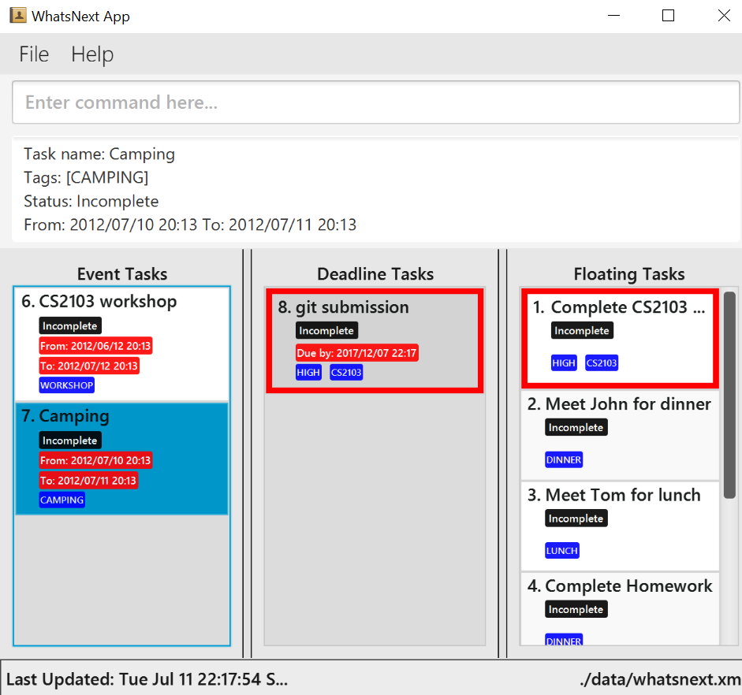

By : Team 4 Since: Jun 2017 Licence: MIT
Ensure you have Java version 1.8.0_60 or later installed in your Computer.
Having any Java 8 version is not enough.
This app will not work with earlier versions of Java 8.
Download the latest whatsNext.jar from the releases tab.
Copy the file to the folder you want to use as the home folder for your Task Manager.
Double-click the file to start the app. The GUI should appear in a few seconds.

Type the command in the command box and press Enter to execute it.
e.g. typing help and pressing Enter will open the help window.
Some example commands you can try:
list : lists all tasksadd d/July 10 t/5-6 e/project meeting adds an Event task to your task manager.delete1 : deletes the 1st task shown in your current listexit : exits the appRefer to the Features section below for details of each command.
Command Format
- Words in
UPPER_CASEare the parameters.- Items in
SQUARE_BRACKETSare optional.- Items with
...after them can have multiple instances.- Parameters can be in any order.
Reserved Tags
- Reserved tag
HIGH,MEDIUM,LOWnames are used to denote the importance of a certain task- Tagged task will be highlighted
RED,BLUE,GREEN- Items with
...after them can have multiple instances.- Parameters can be in any order.
help Format: help
Help is also shown if you enter an incorrect command e.g.
abcdor the keywordhelp
add Adds an (1) event, (2) deadline or (3) floating to the task manager
Format:
(1) add d/DATE t/TIME n/TASK_NAME [h/TAG]...
(2) add d/DATE n/TASK_NAME [h/TAG]...
(3) add n/TASK_NAME [h/TAG]...
Tasks can have any number of tags (including 0) Smart Add:
(1) add TASK_TYPE TASK_PARAMETERS
TASK_TYPE must match task type (1) event, (2) deadline or (3) floating
TASK_PARAMETERS must match task parameters of task type
Examples:
add d/July 10 t/5-6 e/project meetingadd d/July 10 n/project meetingadd n/project meeting h/CS2103add n/project meeting h/CS2103 h/SPECIAL_TERMlist Shows a list of (1) incomplete, (2) complete, (3)all tasks in the task manager.
Format:
(1) listor
list /i
(2) list /c
(3) list /a
edit Edits an existing task in the task manager.
Format: edit INDEX [d/DATE] [t/TIME] [n/TASK_NAME] [h/TAG]...
- Edits a task at the specified
INDEX. The index refers to the index number shown in the last task listing.
The index must be a positive integer 1, 2, 3, ...- At least one of the optional fields must be provided.
- Option fields must match task type (1) event, (2) deadline or (3) floating
- Existing values will be updated to the input values.
- When editing tags, the existing tags of the task will be removed i.e adding of tags is not cumulative.
- You can remove all task's tags by typing
t/without specifying any tags after it.
Examples:
edit 1 d/July 10 t/5-10
Edits the date and time of the 1st task (event) to be July 10 and 5-10 respectively.
edit 2 n/cs2103 submission meeting t/
Edits the task name of the 2nd task (deadline) to be cs2103 submission and clears all existing tags.
find Finds tasks whose names or tags contain any of the given keywords.
Format: find KEYWORD [MORE_KEYWORDS]
- The search is case insensitive. e.g
meetingwill matchMeeting- The order of the keywords does not matter. e.g.
submission meetingwill matchsubmission meeting- Only the name and tags are searched.
- Only full words will be matched e.g.
meetingwill not matchmeetings- Tasks matching at least one keyword will be returned (i.e.
ORsearch). e.g.meetingwill matchsubmission meeting
Examples:
find submissionsubmission meeting but not submission find CS2103CS2103 delete Deletes the specified task from the task manager. Irreversible.
Format: delete INDEX
Deletes the task at the specified
INDEX.
The index refers to the index number shown in the most recent listing.
The index must be a positive integer 1, 2, 3, ...
Examples:
listdelete 2find CS2103delete 1find command.undo Undo the last action performed by the user.
Format: undo
clear Clears (1) incomplete, (2) complete, (3)all tasks in the task manager.
Clears all entries from the task manager.
Format: clear
(1) clear /i
(2) clearor
clear /c
(3) clear /a
mark Mark the task at the specified INDEX to complete the task.
Format: mark INDEX
mark the task at the specified
INDEX.
The index refers to the index number shown in the most recent listing.
The index must be a positive integer 1, 2, 3, ... Examples:
listmark 2find CS2103mark 1find command.unmark Unmark the task at the specified INDEX.
Format: unmark INDEX
Unmark the task at the specified
INDEX.
The index refers to the index number shown in the most recent listing.
The index must be a positive integer 1, 2, 3, ... Examples:
listunmark 2find CS2103unmark 1find command.sort Sort the tasks on the task manager
Format: sort tt/TASK_TYPE [DATE] [IMPORTANCE] [ALPHABETICALLY]
sort the task of the specified
TASK_TYPE.
The TASK_TYPE must be a valid task typeevents,deadline,floating.
sort events importantsort events datesort deadline datesort floating alphaviewPath View data file directory path.
Format: viewPath
View the directory where the data file is saved
Updates data file directory. : updatePath
Format: updatePath [Path Directory]
Updates the directory where the data file is saved
Task Manager data are saved in the specified path directory.
Task Manager data are saved in the hard disk automatically after any command that changes the data.
There is no need to save manually.
exit Exits the program.
Format: exit
Q: How do I transfer my data to another Computer?
A: Install the app in the other computer and overwrite the empty data file it creates with the file that contains the data of your previous Task Manger folder.
Add add d/DATE t/TIME n/TASK_NAME [h/TAG]... <br> e.g.add d/July 10 t/5-6 e/project meeting`
List list
e.g.
Clear : clear
Edit : edit INDEX
e.g. edit 3
Delete : delete INDEX
e.g. delete 3
Find : find KEYWORD [MORE_KEYWORDS]
e.g. find CS2103 Exams
Undo : undo
e.g.
Mark : mark INDEX
e.g. mark 1
Mark : unmark INDEX
e.g. unmark 1
Sort : sort tt/TASK_TYPE [DATE] [IMPORTANCE] [ALPHABETICALLY]
e.g. sort floating alpha
View Data File Path : viewPath
e.g.
Update Data File Path : updatePath [Path Directory]
e.g.
Exit : exit
e.g.
Help : help
e.g.